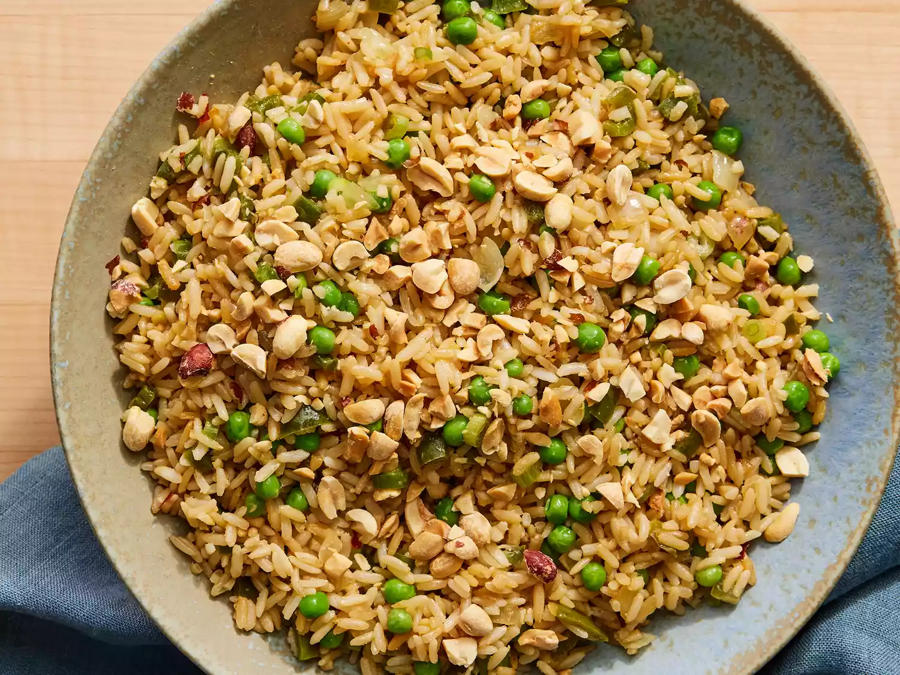

Vegetable Fried Rice

Description
This vegetable fried rice combines the nutty flavor of brown rice with the fresh
taste of bell peppers, baby peas, and other vegetables.
Ingredients
- 3 cups water
- 1 ½ cups quick-cooking brown rice
- 2 tablespoons peanut oil
- 1 small yellow onion, chopped
- 1 small green bell pepper, chopped
- 1 teaspoon minced garlic
- ¼ teaspoon red pepper flakes
- 3 green onions, thinly sliced
- 3 tablespoons soy sauce
- 1 cup frozen petite peas
- 2 teaspoons sesame oil
- ¼ cup roasted peanuts (Optional)
Steps
- Bring water to a boil in a saucepan. Stir in rice. Reduce heat, cover, and simmer until liquid is absorbed,
about 20 minutes. Set aside.
- Heat peanut oil in a large skillet or wok over medium heat. Add onions, bell pepper, garlic, and red pepper
flakes. Cook, stirring occasionally, for 3 minutes.
- Increase heat to medium-high. Stir in cooked rice, green onions, and soy sauce; cook and stir for 1 minute.
- Add peas and cook for 1 minute more.
- Remove from heat. Stir in sesame oil and garnish with peanuts.